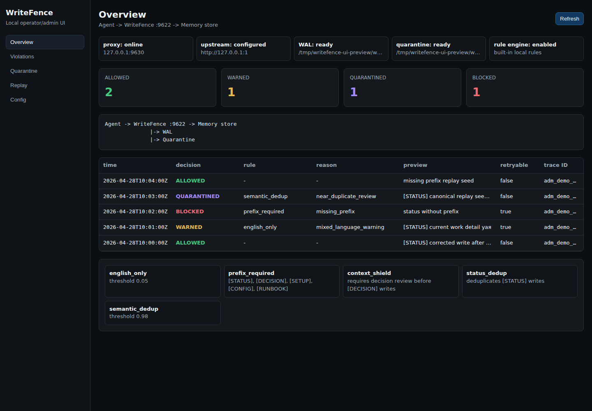
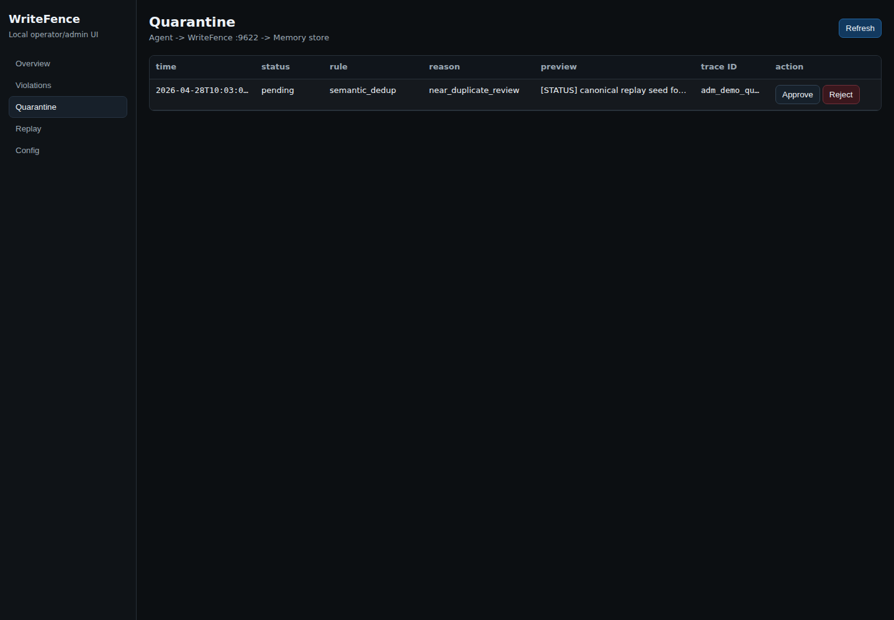
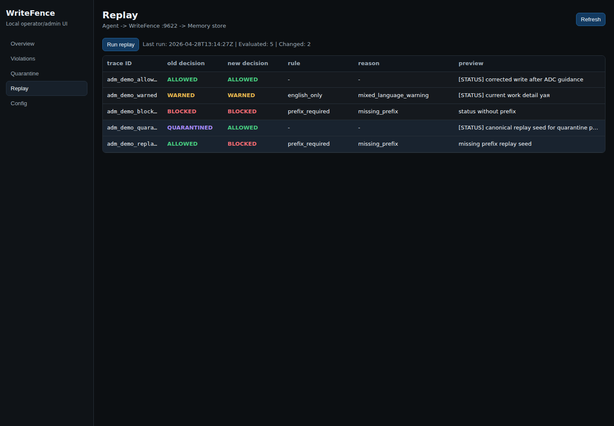

WriteFence
A local admission controller for agent memory writes. Put it in front of your memory store, review every write decision, and replay policy changes before bad context becomes durable state.

Memory writes need an admission path
Block malformed writes
Reject bad memory before it reaches long-term state, with a machine-readable decision and suggested fix.
Quarantine risky writes
Hold near-duplicates or review-required writes locally until a human approves or rejects them.
Replay policy changes
Use the WAL to see how historical writes would behave under the current rule set.
Local-first architecture
Agent or appAttempts a memory write
WriteFenceEvaluates local rules
Allowed / warnedForwarded upstream
QuarantinedHeld for review
BlockedRejected with ADC
Three-minute local preview
go build -o bin/writefence ./cmd/writefence
go build -o bin/writefence-cli ./cmd/writefence-cli
go run ./demo/mock-memory-store.go -addr 127.0.0.1:9621
WRITEFENCE_DATA_DIR=/tmp/writefence-alpha \
./bin/writefence --addr 127.0.0.1:9622 --upstream http://127.0.0.1:9621
WRITEFENCE_DATA_DIR=/tmp/writefence-alpha \
WRITEFENCE_WAL=/tmp/writefence-alpha/writefence-wal.jsonl \
./demo/canonical-demo.shOpen http://127.0.0.1:9622/_writefence for the local operator UI.
Operator views

Quarantine review keeps risky writes out of durable memory until approved.

Replay shows how previous writes evaluate under the current policy.